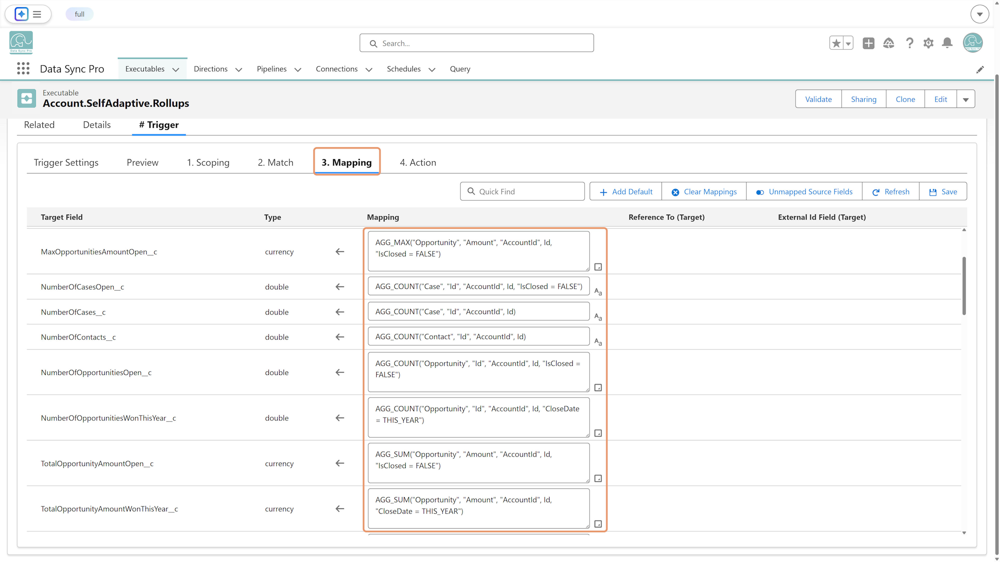

In a Self-Adaptive #Trigger Executable (Before Insert
or Before Update), open the
Mappings tab and use the
AGG functions from the formula
library to calculate rollup summaries.
Notes
AGG functions do not require objects to be
related via a master-
detail or lookup relationship—even a regular text field can be used.
Only configure the AGG mappings once in the parent object's Self-Adaptive #Trigger.
Add the following line to the Apex Trigger on both the parent and the child objects so DSP can invoke the rules at runtime:
pushtopics.TriggerServices.execute();
